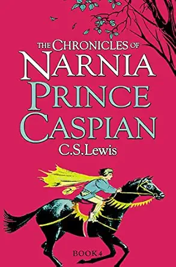
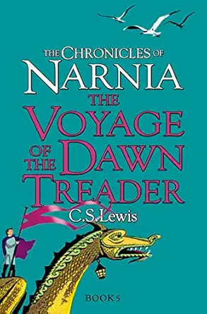
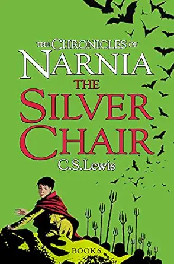
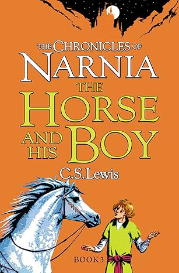

The Lion,
the Witch
and the Wardrobe
By C.S. Lewis
Genre: Fantasy / Adventure | Age Group: 8+ years
Published in 1950, this is the most famous book in The Chronicles of Narnia series. It tells the
story of four siblings—Peter, Susan, Edmund, and Lucy—who are evacuated from London during the
Blitz to live in a large, mysterious country house. While exploring, the youngest, Lucy, steps
into an old wardrobe and discovers the magical, snowy land of Narnia.
The land is under the spell of the White Witch, who has made it "always winter but never
Christmas." The children must join the Great Lion, Aslan, to fulfill a prophecy, defeat the
Witch, and bring Spring back to Narnia.
Creative Learning Activities
Engage your young readers with hands-on projects inspired by the magical world of Narnia.
The Wardrobe Sensory Bin
Create a mini Narnia! Fill a container with "snow" (cotton wool or baking soda and hair conditioner). Add small figurines of a lion, a sleigh, and some pine branches. Hide a small wooden wardrobe at the entrance for kids to find.
Design Your Own Shield
In the book, Father Christmas gives Peter a shield with a red lion. Use cardboard to cut out a shield shape. If you were a hero in Narnia, what symbol would be on your shield? Paint it and explain why you chose that animal or symbol.
Map Making
Narnia is filled with iconic locations. Have children draw an "aged" map using a tea-stained piece of paper featuring Key Landmarks: The Lamp-post, Mr. Tumnus’s House, The Stone Table, and Cair Paravel.
Discussion Points & Themes
The Choice
Why did Edmund follow the White Witch? Discuss how temptation and "Turkish Delight" can sometimes cloud our judgment.
Courage
Who was the bravest character? Is bravery doing something when you aren't afraid, or doing it even though you are?
Atmosphere
How does the author describe the change from winter to spring? How does the setting reflect the mood of the story?
Why This Book?
This story is a masterpiece of world-building. It balances high-stakes adventure with deep emotional themes like loyalty, sacrifice, and forgiveness.
Vocabulary List
Introduce these "Narnian" words to your young readers to expand their language skills:
Wardrobe
A large, tall cupboard in which clothes may be hung or stored.
Daughter of Eve / Son of Adam
The terms used by Narnian creatures to describe human girls and boys.
Prophecy
A prediction of what will happen in the future.
Traitor
A person who betrays a friend, country, or principle.

Meet C.S. Lewis
Master of Fantasy
Clive Staples Lewis was a British writer and lay theologian. He held academic positions at both Oxford University and Cambridge University.
He is best known for his works of fiction, especially The Chronicles of Narnia, which has captivated millions of readers and remains a beloved classic of children's literature.
Start a Reading Habit
Explore more magical adventures and classic stories for young readers.

Prince Caspian
Chronicles of Narnia

The Voyage of the Dawn Treader
Chronicles of Narnia

The Silver Chair
Chronicles of Narnia

The Horse and His Boy
Chronicles of Narnia
Start Your Child's
Magical Journey Today
Whether for bedtime, the classroom, or a gift — this book is a treasure every child deserves.